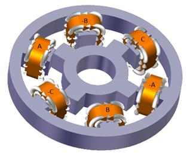
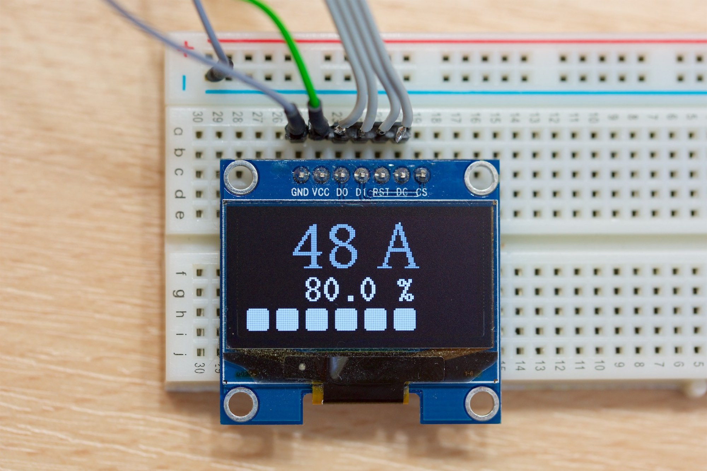
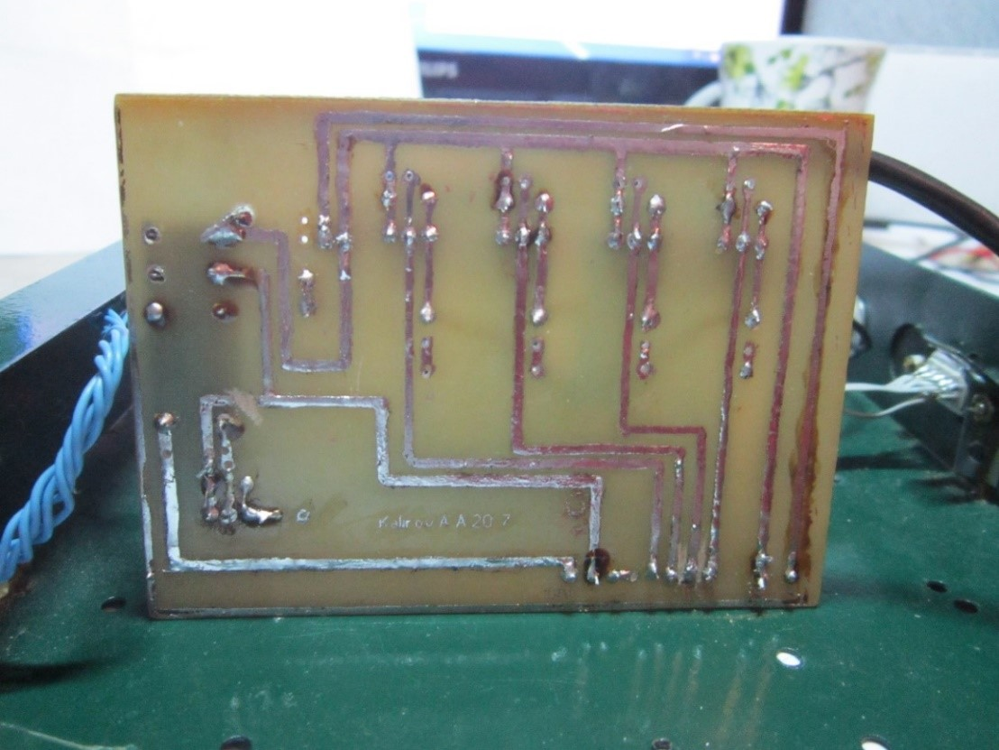
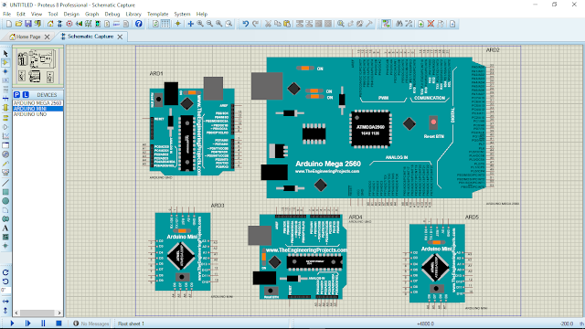
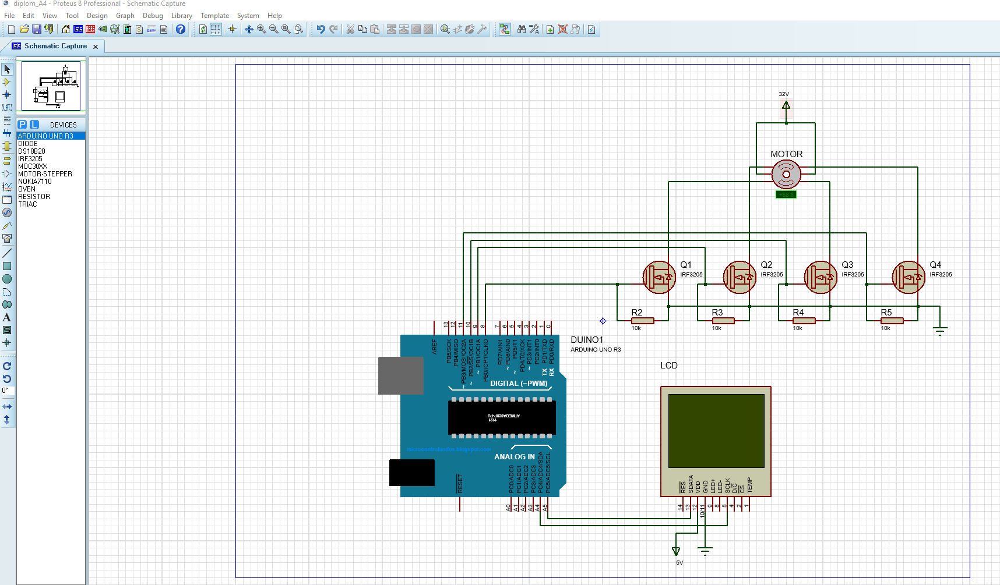
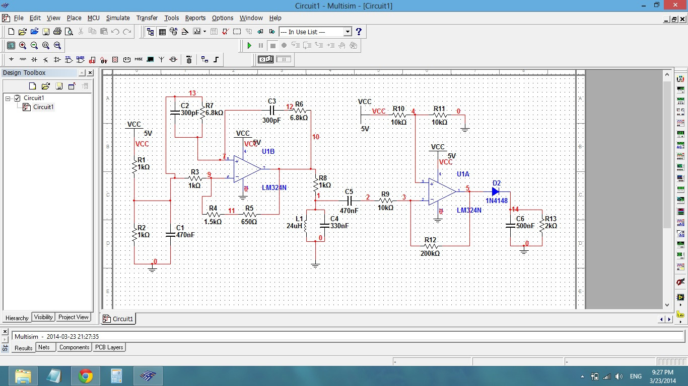
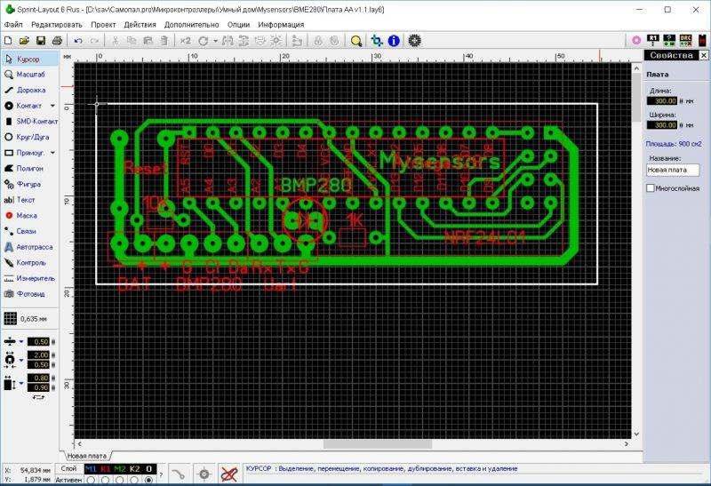
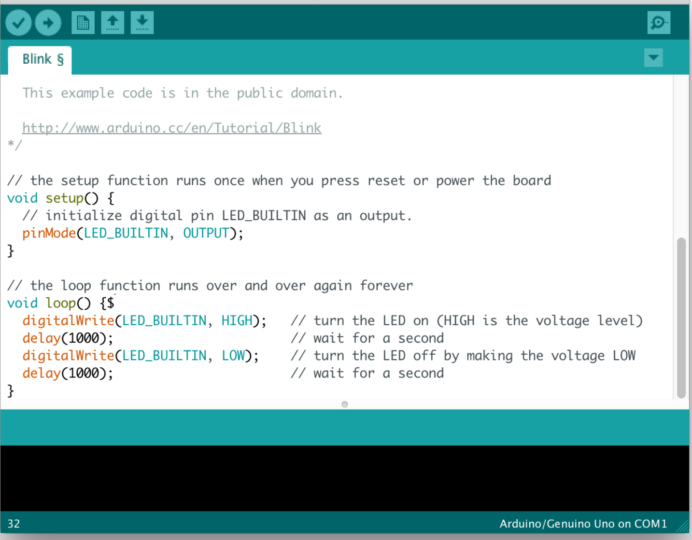
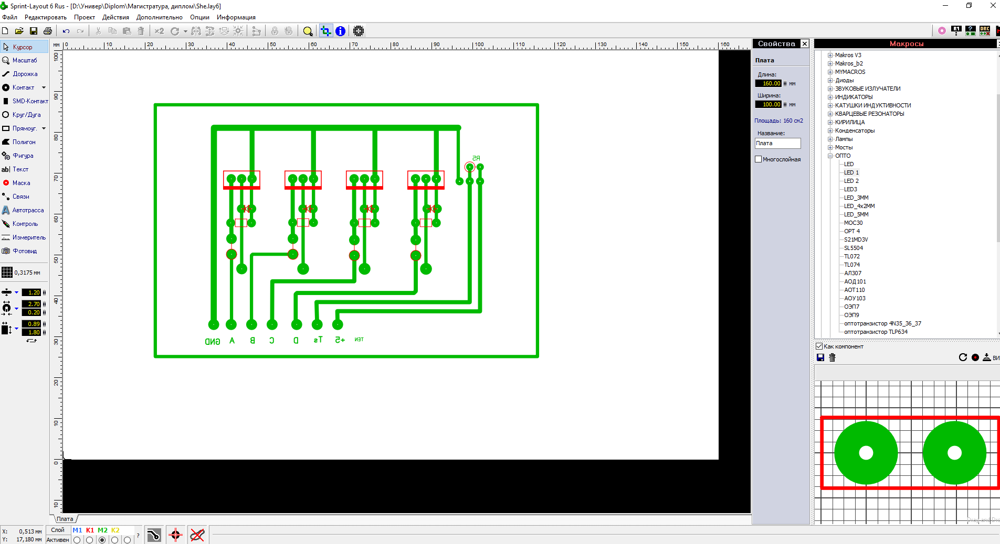

Введение
В данном реферате произведен краткий обзор используемых при напи-сании магистерской диссертации технологий, представлены промежуточные результаты, полученные при использовании данных технологий, сделан краткий обзор альтернативных технологий, с помощью которых можно бы-ло бы решить поставленные в магистерской диссертации задачи.
Темой магистерской диссертации является создание тянущего устрой-ства для одношнекового экструдера.
Поскольку в ходе магистерской диссертации необходимо разработать и изготовить электронное устройство, то невозможно обойтись без использо-вания информационных технологий. С помощью специализированного про-граммного обеспечения разработана и отлажена модель электрической схе-мы устройства. На основе данной модели разработана и изготовлена печат-ная плата. Управление шаговым двигателем устройства осуществляется мик-роконтроллером. Разработка и отладка программного обеспечения для мик-роконтроллеров происходит на языке программирования C++ в специали-зированных средах разработки (таких как Atmel studio, AVR code, Arduino IDE и других).
Так же в ходе работы производятся математические расчеты, создание технической документации, чертежи, подготовка презентаций и др. Все эти действия целесообразно производить с использованием компьютерных ин-формационных технологий. Обзор на все использованные технологии будет представлен в данном реферате.
Глава 1
В ходе магистерской работы будет изготовлено тянущее устройство для одношнекового экструдера, которое позволяет с помощью специальных роликов вытягивать с постоянной скоростью филамент из одношнекового экструдера. Производить вращение роликов с постоянной скоростью будет униполярный шаговый двигатель.
Шаговый электродвигатель - это синхронный бесщёточный электро-двигатель с несколькими обмотками, в котором ток, подаваемый в одну из обмоток статора, вызывает фиксацию ротора. Последовательная активация обмоток двигателя вызывает дискретные угловые перемещения (шаги) рото-ра. [1].

Существуют три основных типа шаговых двигателей:
• Двигатели с переменным магнитным сопротивлением.
• Двигатели с постоянными магнитами.
• Гибридные двигатели.
Режимы управления шаговым двигателем
Полношаговое управление одной обмоткой двигателя. При таком управлении только через одну обмотку пропускается электрический ток. Та-кой способ используется редко ввиду того, что он позволяет получить менее половины вращающего момента.
Полушаговый режим. Данный способ управления позволяет получить удвоенную точность позиционирования вала двигателя. Для реализации данного метода в некоторые моменты времени питание подается на все пары обмоток, в результате чего ротор повернется на половину своего нормаль-ного шага.
Микрошаговый режим. Суть управления в таком режиме заключается в подаче питания на обмотки двигателя не импульсами, а сигнала, схожего с синусоидой. Такой сигнал получают при помощи широтно-импульсной мо-дуляции. При микрошаговом управлении можно получить наиболее точное позиционирования ротора двигателя, а также наиболее гладкое вращение. Такой способ управления используют в ЧПУ станках, а также в другом точ-ном оборудовании. [2]
В нашем устройстве будет использоваться униполярный шаговый дви-гатель с постоянными магнитами. Управление будет осуществляться в полу-шаговом режиме с помощью аппаратной платформы Arduino. Драйвер ша-гового двигателя будет выполнен на 4 полевых транзисторах 18N50.
OLED дисплей
Для отображения и выбора режима работы изготовленного устройства используется Oled дисплей.
На данный момент OLED дисплеи являются одними из наиболее со-вершенных типов дисплеев. Их преимуществами являются: широкие углы обзора, низкое энергопотребление, малая толщина, высокая контрастность и яркость, отсутствие необходимости во внешней подсветке. Из недостатков можно отметить ограниченный срок службы, вызванный износом отдельных пикселей при непрерывной работе.
В нашем устройстве применяется 0,96 дюймовый OLED дисплей с раз-решением 128*64 пикселя под управление микросхемы SSD1306. Обмен данными с микроконтроллером происходит по I2C шине.
Дисплей оснащён выводами:
+5 вольт
GND (минус питания)
SDA
SCL

Печатная плата
Печатная плата выполнена на одностороннем фольгированном стек-лотекстолите при помощи ЛУТ. [3]
Печатные платы спроектированы в программе Sprintloyout. Чертежи печатных плат печатались лазерным принтером на глянцевой бумаге. На за-готовку из стеклотекстолита накладывался чертеж печатной платы, после че-го производился нагрев с помощью утюга. После нагрева заготовка помеща-лась под проточную воду и с нее удалялись остатки бумаги. Далее заготовка просушивалась, дефекты, возникшие на предыдущих этапах, убирались с помощью перманентного маркера. Далее заготовка помещалась в резервуар с раствором хлорного железа для травления дорожек. Для ускорения про-цесса резервуар раствор был нагрет до температуры 45 градусов. После растворения не покрытых участков меди, плату извлекли из раствора и про-мыли проточной водой.
После удаления тонера с дорожек, плата была обработана наждачной бумагой и обезжирена спиртом. Дорожки покрывались паяльным флюсом, после чего были залужены оловянным припоем. Затем были просверлены отверстия и запаяны радиоэлементы.

Основные положения и проблемы предметной области исследования, которые можно решить с помощью инфор-мационных технологий
Одной из основных проблем магистерской диссертации является про-ектирование и изготовление печатной платы. Данную проблему можно ре-шить при помощи программного комплекса Proteus. Proteus содержит биб-лиотеку электронных компонентов из которых можно спроектировать элек-трическую схему, а далее произвести ее отладку, так как данный комплекс поддерживает эмуляцию работы электронных компонентов. Альтернатив-ным вариантом можно было бы использовать программу Multisim, которая так же позволяет производить проектирование и эмуляцию работы элек-тронных схем, однако Proteus является более удобным в работе, имеет луч-шую документацию и что самое важное, имеет возможность эмуляции рабо-ты микроконтроллеров. Подробный обзор данной технологии будет произ-ведет в главе 2.



Для подбора электронных компонентов нужно знать их характеристи-ки. Зная питающее напряжение схемы, потребление тока двигателем, диспле-ем, микроконтроллером нужно рассчитать сопротивление резисторов, ем-кость конденсаторов, выбрать полевые транзисторы, диоды и др. Математи-ческие расчеты удобно производить в специализированных программах, та-ких как Smath Studio или Microsoft Excel.
Так же немаловажной задачей является написание программного кода прошивки микроконтроллера atmel328p. Самым мощным и функциональ-ным инструментом для данной задачи является комплекс Atmel Studio, кото-рый предоставляет разработчику широкие возможности для написания и от-ладки программного кода. Одним из недостатков данной программы являет-ся сложность разработки и объемность самой программы. В нашем случае использована менее сложная среда разработки Adduino IDE, которая справ-ляется с основными задачами по написанию и отладке кода и имеет необхо-димые библиотеки для работы с Oled дисплеями, так же у меня уже имеются наработки для работы с шаговыми двигателями, потенциометрами, энкоде-рами, кнопками с предыдущих проектов. Поэтому для обеспечения более высокой эффективности написания кода была выбрана именно это про-граммное обеспечение. Более подробный обзор представлен в главе 2.
Так же для изготовления механических узлов устройства их необходи-мо спроектировать в специализированном комплексе Solid Works.
Для написания документации так же удобно использовать программ-ные продукты Microsoft Word, Excel. Подготовка презентаций производи-лась с помощью программы Microsoft PowerPoint.
Итоги главы 1
Подводя итоги вышесказанному, для создания тянущее устройство для одношнекового экструдера были использованы следующие информационные технологии:
• Proteus -система автоматизированного проектирования;
• Sprint layout - простое и эффективное программное обеспечение для ручного проектирования и рисования печатных плат для электронных устройств с малой и большой степенью сложности;
• Arduino IDE- среда разработки, комплекс программных средств, ис-пользуемый для разработки программного обеспечения (ПО) под микроконтрол-леры;
• Язык программирования C++ -компилируемый, статически типизиро-ванный язык программирования общего назначения;
• Микроконтроллеры AVR -семейство восьмибитных микроконтролле-ров, ранее выпускаемых фирмой Atmel, затем Microchip;
• Solid Works – для проектирования механических частей;
• Microsoft Excel и Smath Studio – для математических расчетов;
• Microsoft Word – для подготовки текстовой документации;
• Microsoft PowerPoint – для создания презентаций;
• Ресурсы сети интернет – для поиска технической документации и необ-ходимой информации для написания диссертации.
Глава 2
Proteus - система автоматизированного проектирования
Proteus – это универсальная программа, с помощью которой можно создавать различные виртуальные электронные устройства и выполнять их симуляцию. Она содержит огромную библиотеку аналоговых и цифровых микросхем, датчиков, дискретных элементов: резисторов, конденсаторов, диодов, транзисторов и т.п. Также имеется широкий набор компонентов оптоэлектроники: дисплеи, светодиоды, оптопары и др. Главным преимуще-ством и отличием Протеус от других подобных программ для симуляции работы электрических цепей, — это возможность выполнять симуляцию ра-боты микропроцессоров и микроконтроллеров (МК). Библиотека Proteus со-держит такие основные типы МК: AVR, ARM, PIC, Cortex.
Как и в любом другом аналогичном софте, предназначенном для симуляции работы электрических цепей, данный софт имеет ряд виртуальных из-мерительных приборов: амперметры, вольтметры, ваттметр, осциллограф, логический анализатор, счетчик и т.п.
Существует множество систем моделирования электронных схем. Наиболее популярные и функциональные это Multisim и Proteus. Multisim обладает очень удобным интерфейсом, и в нем удобно отлаживать аналого-вые устройства, так как он позволяет использовать виртуальные транзисто-ры и усилители, но совершенно не поддерживает сложные системы: микро-контроллеры и разного рода драйверы. [4]
Отличительные особенности:
Поддерживаемые этапы разработки:
• Разработка схемы электрической принципиальной (ввод в графическом редакторе)
• Моделирование схемы с использованием разнообразных вирту-альных приборов
• Разработка печатной платы, включая 3D-визуализацию её сборки
• Возможности отладки микропрограммного обеспечения:
• совместное моделирование работы микроконтроллера, исполня-ющего заданную программу, и окружающих его аналоговой и цифровой схем
• широкие отладочные возможности, в т.ч. доступ к содержимому регистров и памяти, задание точек останова программы, пошаговое выпол-нение
• отладка на уровне исходного кода (Си, Бейсик, Ассемблер, в за-висимости от типа используемого для отладки файла с испытываемым мик-ропрограммным обеспечением)
• поддержка нескольких семейств микроконтроллеров от разных произ-водителей, в том числе:PIC12, PIC16, PIC18 и PIC24 (Microchip), 8051/8052, в т.ч. производные от них, выпускаемые Philips и Atmel, AVR, Tiny AVR и Mega AVR (Atmel),ARM7, в т.ч. LPC2000 (NXP)
Преимущества
• Выполнение всех этапов разработки электронного устройства на основе микроконтроллера в единой среде
• Возможность написания, отладки и тестирования микропро-граммного обеспечения еще до физического изготовления опытного образ-ца системы.
• Генерируемые диагностические сообщения (например, при вы-полнении непредусмотренной инструкции) как со стороны ЦПУ, так и со стороны моделей устройств ввода-вывода, позволяют обнаружить сложные в поиске ошибки программирования
• Ускоряет процесс разработки электронного устройства
• Поддержка совместной работы с аппаратными устройствами, подключенными через порт компьютера
Среда PROTEUS совместима с популярными средами разработки мик-ропрограммного обеспечения, в том числе:
• CodeVisionAVR (только МК AVR)
• IAR (любые МК)
• ICC (МК AVR, msp430, ARM7)
• WinAVR (МК AVR)
• Keil (МК 8051 и ARM)
• HiTECH (МК 8051 и PIC)
Sprint-Layout
Sprint-Layout - это простейшее, но весьма эффективное средство для проектирования односторонних и двухсторонних печатных плат. Эта про-грамма содержит все необходимые функции (кроме автоматического развод-чика) для создания топологии плат с максимальными размерами 300х300 мм. Sprint-Layout позволяет сохранять файлы в форматах Gerber и Excellon, которые являются стандартом обмена данными при производстве печатных плат. Sprint-Layout оборудован инструментами для формирования контакт-ных площадок различной формы (как для выводного, так и для поверхност-ного монтажа), проводников, полигонов, текста и т.д. Размеры элементов можно изменять в широком диапазоне.[5]
Для каждой стороны печатной платы предусмотрены два слоя - слой проводников и слой маркировки. Слой паяльной маски создается автомати-чески. Также возможно автоматическое создание общей шины, тестирование сетей и т.д.
Встроенная автоматизированная (не автоматическая) трассировка поз-воляет развести проводники.
Библиотека SL содержит ряд наиболее распространенных типоразме-ров электронных компонентов. При необходимости эту библиотеку можно пополнить.

Среда разработки Arduino IDE
Для разработки программного кода для микроконтроллера использо-валось программная интегрированная среда разработки Arduino IDE. Дан-ная среда разработки включает в себя редактор кода, компилятор, инстру-менты для загрузки кода в контроллер (AVR Downloader-Uploader). Arduino IDE написана на языке Java на основе проекта Processing и доступна для операционных систем Windows, Linux, Mac OS.
В качестве языка программирования в Arduino IDE используется C++ (компилятор AVR-GCC). Программы, написанные в данной среде разработ-ки, сохраняются в файлах с расширением ino. Перед компиляцией файлы об-рабатывает препроцессор Arduino. Так же Arduino IDE позволяет работать с стандартными C++ файлами (с расширением .cpp, .h).

Язык программирования C++
Язык программирования С++ представляет высокоуровневый компи-лируемый язык программирования общего назначения со статической типи-зацией, который подходит для создания самых различных приложений. На сегодняшний день С++ является одним из самых популярных и распростра-ненных языков.
Своими корнями он уходит в язык Си, который был разработан в 1969—1973 годах в компании Bell Labs программистом Деннисом Ритчи (Dennis Ritchie). В начале 1980-х годов датский программист Бьерн Стра-уструп (Bjarne Stroustrup), который в то время работал в компании Bell Labs, разработал С++ как расширение к языку Си. Фактически вначале C++ просто дополнял язык Си некоторыми возможностями объектно-ориентированного программирования. И поэтому сам Страуструп вначале называл его как "C with classes" ("Си с классами").
Впоследствии новый язык стал набирать популярность. В него были добавлены новые возможности, которые делали его не просто дополнением к Си, а совершенно новым языком программирования. В итоге "Си с класса-ми" был переименован в С++. И с тех по оба языка стали развиваться незави-симо друг от друга.
С++ является мощным языком, унаследовав от Си богатые возможно-сти по работе с памятью. Поэтому нередко С++ находит свое применение в системном программировании, в частности, при создании операционных си-стем, драйверов, различных утилит, антивирусов и т.д. К слову сказать, ОС Windows большей частью написана на С++. Но только системным програм-мированием применение данного языка не ограничивается. С++ можно ис-пользовать в программах любого уровня, где важны скорость работы и производительность. Нередко он применяется для создания графических приложений, различных прикладных программ. Также особенно часто его используют для создания игр с богатой насыщенной визуализацией. Кроме того, в последнее время набирает ход мобильное направление, где С++ тоже нашел свое применение. И даже в веб-разработке также можно использовать С++ для создания веб-приложений или каких-то вспомогательных сервисов, которые обслуживают веб-приложения. В общем С++ - язык широкого поль-зования, на котором можно создавать практически любые виды программ. [6]
С++ является компилируемым языком, а это значит, что компилятор транслирует исходный код на С++ в исполняемый файл, который содержит набор машинных инструкций. Но разные платформы имеют свои особенно-сти, поэтому скомпилированные программы нельзя просто перенести с од-ной платформы на другую и там уже запустить. Однако на уровне исходного кода программы на С++ по большей степени обладают переносимостью, ес-ли не используются какие-то специфичные для текущей ос функции. А нали-чие компиляторов, библиотек и инструментов разработки почти под все рас-пространенные платформы позволяет компилировать один и тот же исход-ный код на С++ в приложения под эти платформы.
В отличие от Си язык C++ позволяет писать приложения в объектно-ориентированном стиле, представляя программу как совокупность взаимо-действующих между собой классов и объектов. Что упрощает создание крупных приложений.
Основные этапы развития
В 1979-80 годах Бьерн Страуструп разработал расширение к языку Си - "Си с классами". В 1983 язык был переименован в С++.
В 1985 году была выпущена первая коммерческая версия языка С++, а также первое издание книги "Языка программирования C++", которая пред-ставляла первое описание этого языка при отсутствии официального стан-дарта.
В 1989 была выпущена новая версия языка C++ 2.0, которая включала ряд новых возможностей. После этого язык развивался относительно мед-ленно вплоть до 2011 года. Но при этом в 1998 году была предпринята пер-вая попытка по стандартизации языка организацией ISO (International Organiztion for Standartization). Первый стандарт получил название ISO/IEC 14882:1998 или сокращенно С++98. В дальнейшем в 2003 была издана новая версия стандарта C++03.
В 2011 году был издан новый стандарт C++11, который содержал множество добавлений и обогащал язык С++ большим числом новых функ-циональных возможностей. После этого в 2014 году было выпущено не-большое добавление к стандарту, известное также как C++14. И еще один ключевой релиз языка намечен на 2017.
Компиляторы и среды разработки
Для разработки программ на С++ необходим компилятор - он транс-лирует исходный код на языке С++ в исполняемый файл, который затем можно запускать. Но в настоящий момент есть очень много различных ком-пиляторов. Они могут отличаться по различным аспектам, в частности, по реализации стандартов. Базовый список компиляторов для С++ можно по-смотреть в википедии. Рекомендуется для разработки выбирать те компиля-торы, которые развиваются и реализуют все последние стандарты. Так, на протяжении всего руководства преимущественно будет использоваться сво-бодно распространяемый компилятор g++, разработанный в рамках проекта GNU.
Также для создания программ можно использовать интегрированные среды разработки IDE, такие как Visual Studio, Netbeans, Eclipse, Qt и т.д.
Solid Works
SolidWorks считается неотъемлемой частью промышленных предприя-тий, задачей которых является разработка и производство изделий различ-ного назначения. Сюда входят инженерные конструкции любой сложности, разнообразные детали и компоненты полноценных систем, и даже электриче-ские схемы. Также нередко встречается применение программы в промыш-ленном дизайне.
На сегодняшний день программа доступна для работы лишь на опера-ционных системах Windows. Она популярна не только благодаря широкому функционалу, но и за счет простоты в освоении и доступного интерфейса. К слову, интерфейс приложения полностью настраивается под нужды пользо-вателя. Есть возможность изменить даже размеры значков, а начиная с вер-сии SolidWorks 2016 (которую мы здесь и рассмотрим) интерфейс полностью переработан под мониторы со сверхвысоким расширением.
Возможности SolidWorks
Ниже мы перечислим базовый функционал программы, доступный без установки расширений. Разработчики также позаботились о создании до-полнительных модулей, значительно увеличивающих возможности про-граммы. Итак, вот что предлагает SolidWorks:
• Твердотельное 3D моделирование;
• Разработку сварных конструкций
• Расчеты на прочность;
• Просчет гидро/аэродинамики;
• Возможность создания чертежей;
• Проектирование с учетом материала изделия;
• Визуализацию;
• Просчет на изгиб;
• Работу с данными 3D сканирования (функция ScanTo3D);
• Возможность проектирования изделий из листового металла;
• Работу с электросхемами;
• Возможность анимации готового изделия;
• Экспорт данных в различные форматы.
На 3D моделировании в SolidWorks следует особо заострить внимание, ведь именно оно является основой проектирования любого изделия. Всего в программе доступно три моделирование трех типов:
• Твердотельное моделирование. Разработка изделий, обладающих свойствами реальных физических объектов. Является идеальным вариантом для визуального представления проектируемых изделий, а также для 3D печати;
• Поверхностное моделирование. В SolidWorks реализовано через работу с кривыми и сплайнами. Позволяет поучить изделия с гладкой по-верхностью и плавными изгибами. Часто применяется в промышленном ди-зайне;
• Каркасное моделирование. Так называемое «скелетное» пред-ставление 3D модели, дает представление о форме проектируемого объекта.
3D моделирование в программе происходит на основе эскизов: на ба-зовой плоскости строится простейшая форма, к которой применяются раз-личные операции. Основными из них являются вращение, выдавливание, вы-рез, в том числе по сечению и по траектории. Также есть возможность скруг-ления, зеркального отражения объекта, создания тонкостенных элементов, резьбы и многое другое. Все функции вынесены на панель инструментов сверху, что позволяет с удобством управлять 3D моделью.
Отдельно стоит отметить, что в SolidWorks используется древовидная структура отображения процесса работы над моделью. Таким образом, лю-бое действие заносится в иерархию и может быть перемещено или изменено без лишних сложностей.
Подводя итоги, можно сказать, что программа SolidWorks заслуженно считается одной из самых популярных систем автоматизированного проек-тирования, полностью удовлетворяющей потребности разнообразных про-мышленных организаций и частных лиц. Это мощный инструмент для ком-плексного проектирования изделий и компонентов любой сложности, в том числе и для промышленного дизайна. В среде 3D печати SolidWorks остается наиболее распространенным приложением для создания технических компо-нентов и твердотельного моделирования в целом.
Глава 3
Решение конкретных задач с использованием инфор-мационных технологий
Задачи, решенные с помощью комплекса Proteus и Sprint-Layout .
В ходе разработки аппаратной части изготовляемого устройства, воз-никла необходимость проектирования, отладки и изготовления печатной платы. На печатной плате необходимо расположить драйвер шагового дви-гателя, состоящий из 4 полевых транзисторов IRF3205, производящих ком-мутацию обмоток шагового двигателя. Обвязки транзисторов, в виде диодов, гасящих ЭДС самоиндукции и резисторов, подтягивающих затворы транзи-сторов к нулевой шине питания. Так как шаговый двигатель работает от напряжения 24-32 В, а питать устройство планируется от источника питания 12 В, то необходим импульсный DC-DC преобразователь. Основные элемен-ты импульсного преобразователя, это катушка индуктивности, конденсатор, диод, шим-контроллер. Так как работающий шаговый двигатель создает электромагнитные помехи для микроконтроллера, то управляющие порты микроконтроллера необходимо гальванически развязать с помощью опто-пар. Так же на схеме должна быть обвязка для Oled Дисплея, шины для под-ключения потенциометра и другие электронные компоненты.
Построение данной схемы было выполнено с помощью программы Proteus, а также произведена эмуляция работы данной схемы и скорректиро-ваны номиналы электронных компонентов. Далее на основании полученной модели в программе Sprint-Layout была разведена печатная плата, после че-го она была перенесена на стеклотекстолит при помощи ЛУТ технологии и вытравлен в хлорном железе готовый образец работающей платы.

Задачи, решенные при помощи Arduino IDE
Для управления шаговым двигателем необходимо использовать мик-роконтроллер. В нашем устройстве реализована возможность управления скоростью и направлением вращения шагового двигателя, выведение теку-щей информации на oled дисплей. Скорость вращения задается с помощью вращения ручки потенциометра, настройки применяются путем нажатия на кнопку. Так же имеются кнопки старт, стоп, реверс. Весь функционал реали-зован на микроконтроллере atmel328p, код прошивки написан на языке C++ в среде разработки Arduino IDE.
Алгоритм управления шаговым двигателем состоит в поочередном подключении обмоток к плюсу питания. Скорость вращения регулируется путем установления различного времени задержки перед переключениями.
Заключение
В данном реферате произведен обзор некоторых программных про-дуктов, используемых для проектирования, откладки и изготовления элек-тронных устройств. В нашем случае тянущего устройства для одношнеко-вого экструдера.
Описаны основные возможности используемых программных продук-тов, сделан обзор на альтернативные программные продукты, которые так же можно использовать при проектировании и изготовлении электронных устройств.
Продемонстрированы скриншоты с интерфейсами используемых про-граммных продуктов и фотографии готовых проектов.
Рассмотрена разработка программного обеспечения для микро-контроллеров avr на языке C++ в среде разработки Arduino IDE и описан алгоритм управления шаговым двигателем.
Описан процесс моделирования и отладки электронных схем в про-граммном комплексе Proteus.
Продемонстрированы этапы разработки и изготовления печатных плат с использованием программного обеспечения Proteus и Sprint-Layout, пред-ставлены фотографии изготовленной печатной платы.
В завершении можно отметить, что информационные технологии по-всеместно используются при проектировании, моделировании, отладке и из-готовлении программных и аппаратных продуктов, а также при написании научных и технических работ.
Список использованных источников
1. Vt-tech [электронный ресурс]. -2020. Режим доступа: https://vt-tech.eu/articles/cnc/50-stepper-motors.html Дата доступа: 12.03.2020
2. Studfiles [электронный ресурс]. -2020. Режим доступа: http://www.studfiles.ru/preview/6232218/page:6/ Дата доступа: 12.03.2020
3. Сайт паяльник [электронный ресурс]. -2020. Режим доступа: http://cxem.net/master/45.php- Дата доступа: 02.03.2020
4. diodov.net [электронный ресурс]. -2020 Режим доступа: https://diodov.net/proteus-simulyatsiya-raboty-mikrokontrollerov/ Дата досту-па: 02.03.2020
5. wzone.vegalab.ru [электронный ресурс]. -2020 Режим доступа: http://wzone.vegalab.ru/faq/sprint_layout Дата доступа: 02.03.2020
6. metanit.com [электронный ресурс]. -2020 Режим доступа: https://metanit.com/cpp/tutorial/1.1.phpДата доступа: 02.03.2020
7. Хоровиц П., Хилл У. Искусство схемотехники / П.Хоровиц.,У. Хилл – М.: Мир, 1993.-Т. 2
8. Герман, А.Е. Основы автоматизации эксперимента: лаборатор-ный практикум / А.Е Герман, Г.А. Гачко. – Гродно: ГрГу,2005
9. Лафоре, Р. Объектно-ориентированное программирование в С++ / Р. Лаффоре // 4-е изд. – СПб.: Питер, 2014. – 928 с
10. Калинов А. А., Клёнин Е. Г. Автоматизированная установка для испытания образцов на коррозийную стойкость. Материалы XXVI междуна-родной научно-практической конференции аспирантов, магистрантов и сту-дентов "Физика конденсированного состояния". (Гродно, 19 апреля 2018 г.))
11. Калинов А. А., Клёнин Е. Г. Программно-аппаратный комплекс для удалённого мониторинга состояния помещений. Материалы XXV меж-дународной научно-практической конференции аспирантов, магистрантов и студентов "Физика конденсированного состояния". (Гродно, 20 апреля 2017 г.))